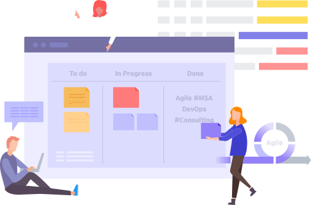
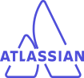
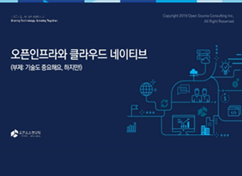
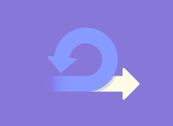
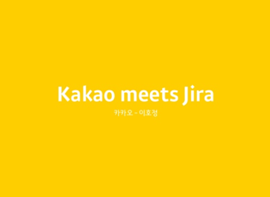

열린기술공방(Sharing Technology LABS)은
오픈소스·클라우드 관련 기술을 전파하고 클라우드 마이그레이션
데브옵스·애자일과 같은 개발 문화를 직접 체험할 수 있는
개방된 지식 공유 공간입니다.

대화를 열고 기술을 완성합니다.
열린기술공방은 고객과의 긴밀한 협업을 통해 현재 시장에서 필요한 기술을 실제 업무 시스템에 적용할 수 있도록 돕는 역할을 합니다.
시장에서 가장 많은 요구사항인 클라우드 마이그레이션, 쿠버네티스 환경 기반의
DevOps/MSA, 아틀리사인 솔루션을 활용한 애자일을 경험하실 수 있는 내용입니다.
오픈소스컨설팅의 경험이 담긴 클라우드 마이그레이션 가이드와 이를 직접 시연해 볼 수 있는 리모트 랩 환경을 제공합니다.
고객은 체계적인 마이그레이션 방법을 학습하고, 마이그레이션 사례 및 전환 시 고려사항에 대한 스킬셋을 축적할 수 있습니다.
클라우드와 같은 기술 트렌드를 빠르게 도입하고 내재화하기 위해서는 일하는 방식의 변화가 동반되어야 합니다.
열린기술공방은 기업의 민첩성을 향상시키기 위한,보다 현실화 된 DevOps/MSA 문화를 체험 프로그램을 제공합니다.
고객은 열린 문화를 직접 경험할 수 있고, 실제 파일럿 형태의 프로젝트 결과물을 통해 기술과 변화된 문화를 고객사 내부에 전파할 수 있습니다.
열린기술공방에서 쌓인 사례와 콘텐츠는 모두 공유됩니다. 지식의 공유는 더 나은 기술 발전으로 이어집니다.
공유의 가치를 실현함으로써 고객과 함께 성장하는 것이 열린기술공방의 궁극적인 목표입니다.
우리의 철학
열려있는 Open
고객은 직접 열린 문화를 경험할 수 있습니다.
공유하는 Share
지식의 공유는 더 나은 기술 발전으로 이어집니다.
협업하는 Cooperate
긴밀한 협업을 통해 스킬셋을 축적할 수 있습니다.
우리의 서비스
Open Source
- 오픈소스 도입 방법 및 기술 가이드
- 오픈소스 전환 및 관리 방법에 대한 노하우 전수
- 오픈소스 라이선스 및 컴플라이언스 가이드
- 오픈소스 도입 관련 컨설팅 서비스
Migration
- OS, 미들웨어 전환 방법 가이드
- AWS 기본 구성 및 마이그레이션 교육
- U2L 방법론 및 미들웨어(Apache, Tomcat) 교육 서비스
- 마이그레이션 PoC (Lightweight, midweight, heavy weight 전환)
MSA/DevOps
- AWS 클라우드, Kubernetes 기본 구축 및 환경 구성 교육
- 솔루션 containerize에 대한 이해 및 고려 검토 사항 가이드
- MSA 개발 방법론 이해 및 초기 프로젝트 구성 방법 가이드
- DevOps를 위한 CI/CD 기본 환경 구축 가이드
- DevOps 및 Agile Simulation 프로그램

Atlassian
－ Jira/Confluence를 활용한 프로젝트 스프린트 및 스크럼
－ Infra 환경 구축 (ex. AWS, OS, Middleware 등)
－ Atlassian 솔루션 설치 및 가이드, 제품 데모 및 Hands on
－ 애플리케이션 세팅/가이드, Trouble 슈팅 가이드
－ Jira/Confluence 사용자 교육
서비스 관련 기술자료 다운로드

클라우드 네이티브 협업
많은 기업들이 오픈 인프라와 클라우드 네이티브 전략을 시도하고 있지만, 기술보다 중요한건 의사소통과 협업/공유 문화입니다.

애자일 & 스프린트
Atlassian 본사의 솔루션 엔지니어인 'Scott'이 전하는 신속하게 변하는 IT팀을 위한 인력, 프로세스, 제품 전반에 걸친 Atlassian의 전략을 확인해 보세요.

Atlasian, DevOps and ITSM
오픈소스컨설팅이 개최한 Atlassian meets DevOps and ITSM 세미나 발표자료를 공유합니다. Atlassian 제품을 실제로 도입한 카카오의 활용 사례를 직접 확인해 보세요!